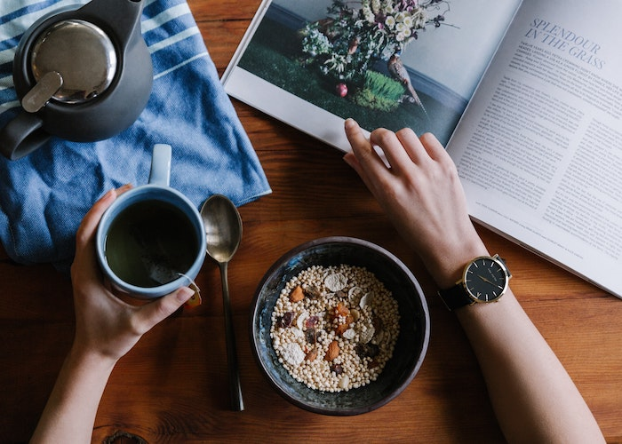
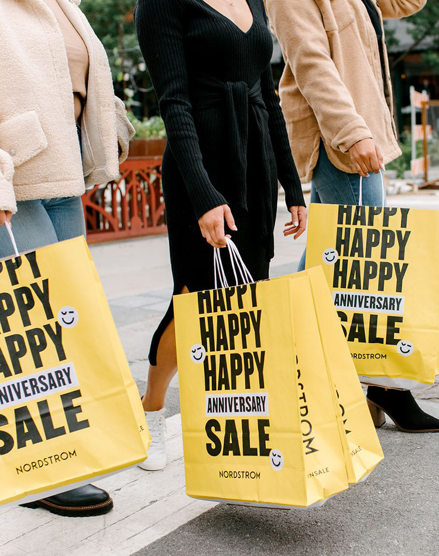
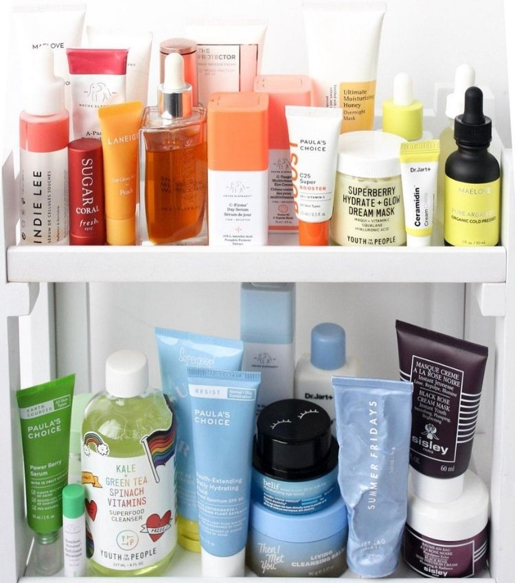

|
|
Financial Wellness Is the Latest Self-Care Trend
You feel prepared to handle any financial crisis, are in control of paying the dept,
know what’s coming in nd going out,and don’t feelstressed over your financial
situation.But financial well-being doesn't end at having “enough” money and
knowing what to do with.The financial wellness recognizes that money is not
an end destination instead , money is a tool we use to live our happiest,
healthiest, best lives possible.Financial wellness refers to a person's overall
financial health and the absence of money-related stress.
|
|
|
Real Women Tell Us About Their Working Experience
Encourage women to speak out against these circumstances and to demand equal
treatment.Here at the Everygirl,we want to be part of this movement.So we are
asked women working in male-dominated fields to reach to us with their stories
and their advice.We were blown away by their responses and hope our readers are
similarly affected.Thank you to each and every woman who shared story with us.We
are honored to host your words.The Everygirl, we want to be part of this movement.
|
|

|
Budget-Friendly Swaps Your Wallet
By this point, we’ve exhausted ourselves talking about how much working from home has warped
our sense of R&R. Was it the pandemic that exposed just how burnt out we all were or did our
collective exhaustion over the years just become too obvious to ignore? Maybe a little bit of both.
Either way, there’s been an obvious reckoning: We’re overworked, and we’re done with de-prioritizing our needs.
Life is clearly too short to not invest in our wellbeing and happiness.We do deserve to be able to carve out some
time in our day to take care of ourselves — but it doesn’t have to be super expensive.
|
|

|
These Are the Nordstrom Anniversary Sales
One of the main reasons I love the Nordstrom sale is that I can find items that
make great investment pieces but still get a great deal on them.You can find anything from
classic items that everyone should have in their closet to wish list items you’ve been
eyeing for a while.But more than anything else,the sale is the perfect time to invest
in great coats, shoes, and accessories that you know you’ll wear for years to come.
|
|

|
The Order to Apply Your Skincare Products
Regardless of the number of products in your skincare routine, if you’re not
a dermatologist or expert, figuring out how to actually make sure all of these
products work involves a little bit of research.Daily skincare routines include
several steps,and it can be a little confusing as to what goes on top of what
and which ingredients shouldn’t be applied together.
|